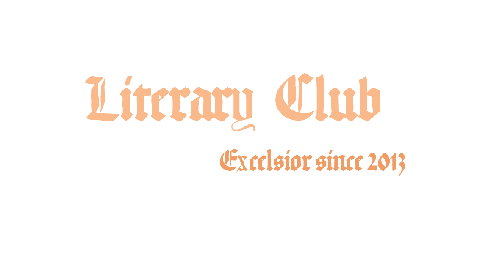
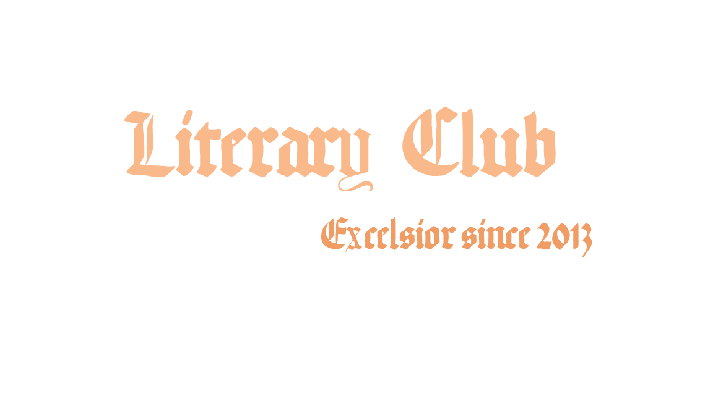

Do you wanna add your blog to the collection? Click here.
") 


“Letters have more patience than people”, or so they say. Time and again, the residents of IISER have taken to writing down their feelings, thoughts and opinions be it on various anecdotes or on issues plaguing the society. Following is a list of blogs by our fellow mates, each of which is a mirror into their souls, showcasing what they hold dear to their hearts.
.jpg "Making all us Victorian pen-lovers happy")

Do you wanna add your blog to the collection? Click here.